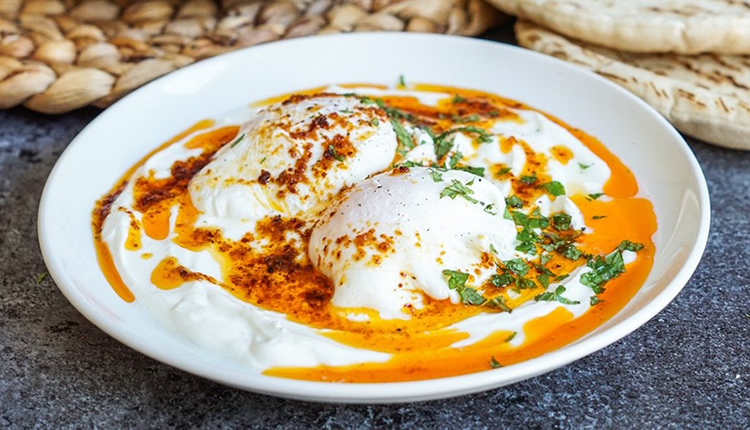

Pratik Bir Alternatif: ÇILBIR
Bu yemek tarifi için nefisyemektarifleri isimli siteden yararlanılmıştır.
Çılbır Tarifi İçin Malzemeler
- 3 - 4 Yumuta
- 200 gr Yoğurt
- 50 gr Zeytinyağı
- Tuz
- Pul biber

Çılbır Tarifi Nasıl Yapılır?
- Bir tencereye su doldurun ve orta ateşte ısıtmaya başlayın. Su kaynamaya başladığında içerisine tuz ekleyin.
- Yumurtanın bir tanesini kaseye kırın, kaseden sıcak su içerisine yavaşça bırakın.
- Tüm yumurtalar için aynı işlemi tek tek yapın. Suyun kaynamamasına özen gösterin, gerekirse bir süre sonra ocağı kapatın.
- Pişen yumurtaları bir kevgir ile tek tek sudan çıkarın, peçete ile kevgirdeki fazla suyu alın, servis tabağına yerleştirin.
- Zeytinyağını küçük bir tavada ısıtın, içerisine pul biber ve tuz ekleyin.
- Yumurtanın üzerine yoğurdu gezdirin, üzerine tereyağını gezdirin ve servis edin.